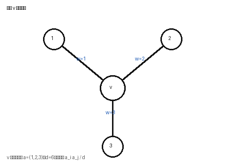
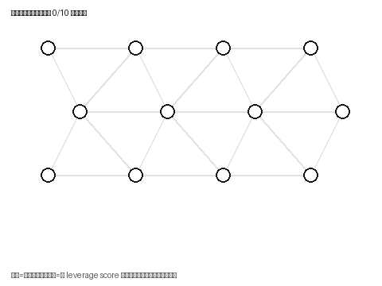
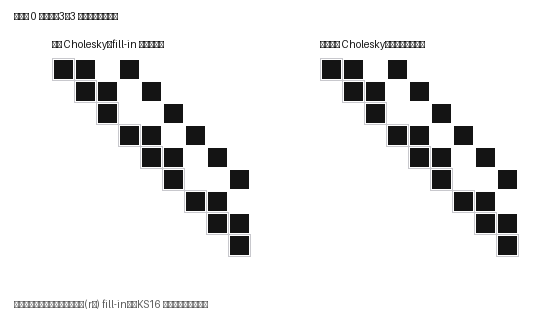

标记约定贯穿全文：原文 = 已发表论文/博士论文中的结论；标准 = 线性代数或图谱理论事实；推导 = 在给定假设下由标准事实直接推出；设想 = 尚需实验验证的方向。
近似高斯消元的核心并不是“把高斯消元逐项截断”，而是在消元产生的稠密相互作用（团 / fill-in）上构造稀疏随机替代物，同时用谱序、有效电阻和矩阵鞅控制全局误差。这篇笔记从 Laplacian 的能量形式出发，推导 Schur 补的变分解释、星形到团的精确消元、谱近似的继承、逆算子与扩散稳定性、可微线性求解的梯度公式；然后解释 Kyng–Sachdeva 的无偏团采样为什么有效、以及为什么“无偏”本身远远不够；最后面向 graph learning 与多前驱 DAG Graph DeltaNet，梳理哪些定理可以迁移、哪些桥不存在。
Kyng (2017) 的博士论文是一组相互关联的算法与分析技术：通过近似消元构造 Laplacian 求解器、稀疏 Schur 补，并向块矩阵与有向系统扩展。其中最适合逐式学习的是 Kyng and Sachdeva (2016, FOCS)：它把随机采样直接嵌入 Cholesky 消元，避免显式生成每一步的全部 fill-in。本笔记以这篇论文的原始算法为锚点。
对当前以多前驱 DAG、残差 Delta 更新、Graph-UT、多端口 WY 和 GPU 分块为主线的研究，最值得迁移的是消元接口的设计方法：先精确定义块内部被消去以后边界必须保留的算子和源项，再决定是否、在什么度量下近似这个接口。Laplacian 提供了一个异常完整的成功范例，但其成功依赖对称性、正权重、半正定序和电阻几何——保留这些假设的模块可以直接利用谱理论；不具备这些假设的 DAG 递归需要单独的非对称分析。
| 研究目标 | 最有用的工具 | 保证止于何处 |
|---|---|---|
| 稀疏图上的稳定传播 | 谱近似、预条件、resolvent 界 | 不自动保证任意非线性 GNN 或训练轨迹 |
| 保留关键节点的图缩减 | Schur 补、谐波延拓、终端电阻 | 不是保留所有原节点信息或全部特征向量 |
| 可微 Laplacian 模块 | 原算子隐式微分、伴随求解 | 前向近似 ≠ 梯度近似 |
| 多前驱 DAG Delta 递归 | 精确多端口消元、非交换路径和 | 不能直接套用 PSD 谱序或电阻采样 |
| 并行与 GPU 实现 | 块消元、依赖图、设置成本摊销 | 代数可并行 ≠ 已获得 GPU 加速 |
Table 1：从研究需求反向选择定理，而不是从“都在做图消元”推断可直接迁移。
设 \(G=(V,E,w)\) 为无向连通图，\(n=|V|\)，\(m=|E|\)。给边任意定向只为定义关联矩阵，令 \(b_e=e_u-e_v\)、\(B\in\mathbb{R}^{m\times n}\)，则
$$L = B^{\!\top} W B \;=\; \sum_{e\in E} w_e b_e b_e^{\!\top} \;=\; D - A, \qquad x^{\!\top} L x = \sum_{e=\{u,v\}} w_e (x_u - x_v)^2. \tag{1}$$解释：Laplacian 的二次型就是“所有边上加权差平方之和”，边定向与否不会改变 \(L\)。对多通道节点表示 \(H\in\mathbb{R}^{n\times d}\)，同样的能量变成 Frobenius 形式：
$$\lVert H\rVert^2_{L,F} := \mathrm{tr}(H^{\!\top} L H) \;=\; \sum_{\{u,v\}\in E} w_{uv}\, \lVert H_u - H_v\rVert_2^2. \tag{2}$$这就是图平滑正则的准确含义：惩罚的是加权邻接差异，而不是无条件地让所有节点表示相同。常量信号不产生能量，所以连通图满足 \(L\succeq 0\)、\(\ker L=\mathrm{span}\{\mathbf{1}\}\)；\(\lVert x\rVert_L\) 在全空间只是半范数，在 \(\mathbf{1}^{\perp}\) 上才是范数。方程 \(Lx=b\) 可解当且仅当 \(\mathbf{1}^{\!\top}b=0\)，解相差一个常量；取均值为零的规范后 \(x=L^{\dagger}b\)（Moore–Penrose 伪逆）。也可以固定一个节点电位求接地的正定系统，但不能混淆两种规范下的坐标值。
全文主要使用约定（\(0<\varepsilon<1\)）：
$$(1-\varepsilon)L \;\preceq\; \widehat{L} \;\preceq\; (1+\varepsilon)L \quad\Longleftrightarrow\quad \bigl|x^{\!\top}(\widehat{L}-L)x\bigr| \le \varepsilon\, x^{\!\top} L x \quad(\forall x). \tag{3}$$解释：Loewner 序（\(\preceq\)）控制的是所有信号的二次能量，而不是采样到的一批训练特征。若 \(L,\widehat L\) 都半正定，式 (3) 还强制两者有相同的零空间。在 \(\mathbf 1^\perp\) 上它等价于
$$\Bigl\lVert L^{\dagger/2}(\widehat{L}-L)L^{\dagger/2}\Bigr\rVert_2 \le \varepsilon. \tag{4}$$所以“小”指的是相对图能量的误差——不是矩阵各元素小，也不是 Frobenius 范数小。高条件数系统中这个区别直接影响求解稳定性。
归一化 Laplacian \(\mathcal L = D^{-1/2}LD^{-1/2}\) 的零向量是 \(D^{1/2}\mathbf 1\) 而不是 \(\mathbf 1\)。对式 (3) 施加同一个合同变换 \(D^{-1/2}\)，谱序仍成立；但如果近似图重新计算了 \(\widehat D\)，\( \widehat D^{-1/2}\widehat L\widehat D^{-1/2} \) 不再是该合同变换的直接结果，度归一化变化需要另行分析。\(I-D^{-1}A\) 的随机游走形式一般非对称，要经相似变换回到对称空间，不能直接套用欧氏范数结论。
把节点分成被消去的 \(F\) 和保留的 \(C\)。当 \(L_{FF}\succ 0\) 时定义 Schur 补：
$$S = \mathrm{Schur}_C(L) \;=\; L_{CC} - L_{CF}\, L_{FF}^{-1}\, L_{FC}. \tag{6}$$精确分块分解为：
$$L=\begin{bmatrix} I & 0\\ L_{CF}L_{FF}^{-1} & I\end{bmatrix}\begin{bmatrix} L_{FF} & 0\\ 0 & S\end{bmatrix}\begin{bmatrix} I & L_{FF}^{-1}L_{FC}\\ 0 & I\end{bmatrix}. \tag{7}$$Proof 令 \(r=z+L_{FF}^{-1}L_{FC}y\)，展开后原二次型 \(=r^{\!\top}L_{FF}r + y^{\!\top}Sy\)；第一项非负且仅当 \(r=0\) 时为零。∎
令谐波延拓矩阵 \(Q=\begin{bmatrix}-L_{FF}^{-1}L_{FC}\\ I\end{bmatrix}\)，则 \(Q^{\!\top}LQ=S\)。所以消元不是忽略内部节点，而是把它置于与边界条件相容的最低能量状态。\(S\) 仍是无向图 Laplacian，保留的是边界可见的等效相互作用——可能比原图稠密得多（电网络里的 Kron reduction 就是它）。
消去节点 \(v\)，其邻居的总连接权重为 \(a_1,\dots,a_r\)，\(d_v=\sum_i a_i\)。星形的 Laplacian 与消去后产生的团：
$$L_{\mathrm{star}(v)}=\begin{bmatrix} d_v & -a^{\!\top}\\ -a & \mathrm{diag}(a)\end{bmatrix},\qquad C_v=\mathrm{diag}(a)-\frac{aa^{\!\top}}{d_v}=\sum_{i<j}\frac{a_i a_j}{d_v}(e_i-e_j)(e_i-e_j)^{\!\top}. \tag{10,11}$$新边权是 \(a_ia_j/d_v\)。一次精确消元可能创建 \(\Theta(r^2)\) 个邻居对——这就是 fill-in 的源头。取 \(a=(1,2,3)^{\!\top}\) 时，消去 \(v\) 后三个叶节点的等效图为
$$S=\begin{bmatrix} 5/6 & -1/3 & -1/2\\ -1/3 & 4/3 & -1\\ -1/2 & -1 & 3/2\end{bmatrix}. \tag{12}$$对终端信号 \(y=(1,0,-1)^{\!\top}\)，内部最优值 \(z_*=-1/3\)，原星形最小能量与 \(y^{\!\top}Sy\) 都是 \(10/3\)。反之，直接取三个叶节点的诱导子图会得到没有边的零矩阵，把这部分边界关系完全丢掉。

若原任务是解 \(Lx=b\)，消元后的系统与回代是
$$S x_C = g_C,\qquad g_C = b_C - L_{CF}L_{FF}^{-1}b_F, \tag{13}$$ $$x_F = L_{FF}^{-1}\bigl(b_F - L_{FC}x_C\bigr). \tag{14}$$当 \(b\perp\mathbf 1\) 时 \(g_C\perp\mathbf 1_C\)。图中有内部特征注入、源项或 bias 时，只替换邻接/Schur 矩阵而漏掉 \(g_C\)，一般不会得到等价计算。这条原则在多端口 DAG 消元里同样重要。
Proof 对固定 \(y\)，把式 (3) 作用于全部 \([z;y]\) 并对 \(z\) 取最小值；下界对每个 \(z\) 成立，上界代入 \(L\) 的最优延拓，由式 (8) 即得。∎
这是“先稀疏化再消元”的关键接口。它不是说多层各自引入一次 \(\varepsilon\) 误差后总误差仍是 \(\varepsilon\)：层层重新近似，误差界要相乘；指数约定下才相加。工程上必须区分“误差的传递”与“新误差的注入”。
因子 \(1/(1-\varepsilon)\) 不能随手删掉：\(\widehat L=(1-\varepsilon)L\) 时非零 \(b\) 使该界取等号。把 \(\widehat L\) 当 \(L\) 的预条件子，则 \(\kappa \le \frac{1+\varepsilon}{1-\varepsilon}\)，且
$$\lVert e_k\rVert_L \le 2\left(\frac{\sqrt\kappa - 1}{\sqrt\kappa + 1}\right)^{\!k}\lVert e_0\rVert_L. \tag{18}$$用法：只构造常数精度的稀疏因子，再迭代求解原方程到高精度，而不必把因子本身造到最终容差——直接要求分解误差趋零的 \(\varepsilon^{-2}\) 代价可能很高。
\(\tau_e\) 是边相对整个图的 leverage score，满足 \(0<\tau_e\le 1\)、\(\sum_e \tau_e = n-1\)。桥边的 leverage 为 1，不因权重小就不重要；存在许多替代路径的边 leverage 反而低。它度量图几何的相对重要性，不等价于某个监督任务的特征归因分数。对终端 \(u,v\in C\)，精确 Schur 补保持终端电阻：
$$(e_u-e_v)^{\!\top}L^{\dagger}(e_u-e_v) = (e^C_u-e^C_v)^{\!\top}S^{\dagger}(e^C_u-e^C_v), \tag{21}$$但注意 \((L^{\dagger})_{CC}\neq S^{\dagger}\)，准确形式要在终端上中心化：\(\Pi_C(L^{\dagger})_{CC}\Pi_C=S^{\dagger}\)。若再做谱近似，电阻按式 (16) 的倒数因子变化，不能机械写成同一个 \(1\pm\varepsilon\)。
Spielman–Srivastava (2011) 把有效电阻变成采样分布：独立采样 \(q\) 次、令 \(p_e=\tau_e/(n-1)\)、抽中的边赋权 \(w_e/(qp_e)\)，则
$$\mathbb E\widehat L = L,\qquad q = O\!\left(\frac{n\log(n/\delta)}{\varepsilon^2}\right) \;\Longrightarrow\; \text{式(3) 以至少 } 1-\delta \text{ 概率成立}. \tag{22}$$计算电阻本身不是免费的——不能先用稠密伪逆算全部电阻再宣称流程近线性。Kyng–Sachdeva 局部算法的重要之处，正是避免把每一步都变成完整电阻计算。

Laplacian 奇异不妨碍定义非零特征值乘积 \(\det_+(L)\)。矩阵树定理给出 \(\det_+(L)=nZ_{\mathrm{tree}}(w)\)，其中 \(Z_{\mathrm{tree}}(w)=\sum_{T}\prod_{e\in T}w_e\)，且
$$\frac{\partial \log\det_+(L)}{\partial w_e}=R_e, \qquad \frac{\partial \log Z_{\mathrm{tree}}}{\partial \log w_e}=w_eR_e=\mathbb P_T(e\in T). \tag{24}$$所以 leverage 同时是谱采样分数和随机生成树的边缘概率——但边缘概率不意味着树内各边独立。这给 graph structure learning 一个不同于消息传递的应用：中心化信号 \(x^{(j)}\in\mathbf 1^\perp\) 由精度矩阵 \(L\) 的高斯模型描述时，平均负对数似然为
$$\mathcal J(w)=\frac{1}{2N}\sum_{j=1}^{N}(x^{(j)})^{\!\top}Lx^{(j)}-\frac12\log\det_+(L)+\lambda\,\Omega(w). \tag{25}$$推导 对可微正则 \(\Omega\)，边权梯度 = 经验边差平方均值的一半 \(-\ R_e/2\) + 正则梯度。只最小化平滑能量容易把权重缩小；log-determinant 项提供概率模型所需的归一化约束。另外从谱近似估计 log-det 时注意维度：式 (3) 只给出 \(|\log\det_+(\widehat L)-\log\det_+(L)|\le -(n-1)\log(1-\varepsilon)\)，是逐特征值求和界，常数级谱精度 ≠ 维度无关的小似然误差。
运行时间与 \(\mathrm{nnz}(R)\) 的期望均为 \(O(a^2\varepsilon^{-2}m\log^3 n)\)。
该定理保证的是因子稀疏——不意味着把乘积 \(PRDR^{\!\top}P^{\!\top}\) 显式展开后仍有相同非零元数。求解器应应用因子和三角求解，不能展开稠密乘积后再讨论加速。

设当前节点 \(v\) 关联 \(r\) 条多重边，边 \(i\) 权 \(w_i\)，加权度 \(d=\sum_i w_i\)（\(r\) 与 \(d\) 不能混用）。执行 \(r\) 次独立采样：先以 \(w_i/d\) 抽第一条边，再以 \(1/r\) 均匀抽第二条边 \(j\)；若 \(u_i\ne u_j\)，输出一条边，权为
$$h_{ij}=\frac{w_i w_j}{w_i+w_j}\qquad (u_i = u_j \text{ 时输出零贡献}). \tag{29}$$注意不是直接以 \(w_iw_j\) 抽一对再照抄精确团边权。对一对不同边索引 \((i,j)\)，一次采样抽到该无序对的概率是 \((w_i+w_j)/(dr)\)，因此 \(r\) 次总期望权为
$$r\cdot\frac{w_i+w_j}{dr}\cdot\frac{w_iw_j}{w_i+w_j}=\frac{w_iw_j}{d}. \tag{30}$$把连接相同邻居的多重边贡献合并，恰好得到精确团：\(\mathbb E[\widehat C_v\mid S_t,v]=C_v\)。输出至多 \(r\) 条边，局部采样线性工作量完成——算法真正解决了“生成 \(r^2\) 个候选再稀疏化”这个瓶颈，而不是只把存储量变小。
把每条权 \(w\) 的边拆成 \(\rho\) 条权 \(w/\rho\) 的平行边不改变 \(L\)，但压低每次随机贡献的相对尺度。结合有效电阻的三角不等式，若当前星形边都满足小 leverage 界，则新采样的团边也满足：
$$h_{ij}R^{L}_{u_iu_j}\;\le\; h_{ij}\bigl(R^L_{u_iv}+R^L_{vu_j}\bigr)\;\le\;\frac{w_iw_j}{w_i+w_j}\left(\frac{1}{\rho w_i}+\frac{1}{\rho w_j}\right)=\frac{1}{\rho}. \tag{31}$$调和型权重 \(h_{ij}\) 的第二个作用：不仅给出正确期望，还使新生成的边继续满足小 leverage 上界——这是 Laplacian 特有的几何闭包，不是对任意矩阵都成立的事实。均匀随机消元顺序用于控制剩余图平均度、累积工作量和方差；不能把定理里的随机排列直接换成确定性的最小度规则再沿用原概率结论。后续实用算法（如 Gao et al. 2023）在采样与数据结构上有专门设计，不能与原始算法逐行等同。
定义 \(Z_k=\sum_{t\le k}d_tc_t^{\!\top}+\widehat S_k\)（已记录因子之和 + 剩余图），\(Z_0=L\)。一次操作精确记录当前消元列、只把团替换成随机团，于是
$$Z_k - Z_{k-1} = \widehat C_k - C_k,\qquad \mathbb E[\,Z_k - Z_{k-1}\mid \text{过去历史及当前主元}\,]=0. \tag{32,33}$$尽管后续团依赖过去的随机结果，误差仍构成适应性矩阵鞅——把“每一步是独立噪声”当证明前提是不对的，正确的是给定过去后条件均值为零。然后用固定的原始 \(L\) 白化：\(Y_k=L^{\dagger/2}(Z_k-L)L^{\dagger/2}\)，目标是 \(\lVert Y_k\rVert_2\le\varepsilon\)，而不是每步在不断变化的 \(\widehat S_k\) 度量下单独证明小误差再未经转换就相加。由式 (31)，单次增量的白化算子范数不超过 \(1/\rho\)。
对自伴鞅差 \(X_t\)（\(\mathbb E[X_t\mid\mathcal F_{t-1}]=0\)、\(\lVert X_t\rVert_2\le R\)），Tropp (2011) 的矩阵 Freedman 不等式联合正负两尾：
$$\mathbb P\Bigl(\exists k:\lVert Y_k\rVert_2\ge t,\ \lVert V_k\rVert_2\le\sigma^2\Bigr)\le 2d\exp\!\left(-\frac{t^2}{2(\sigma^2+Rt/3)}\right), \tag{35}$$其中 \(V_k=\sum_{t\le k}\mathbb E[X_t^2\mid\mathcal F_{t-1}]\) 是可预测二次变差——需要控制的是它，不是终点噪声的期望或逐步最大值。原始分析还利用：均匀选主元时团不超过对应星形、所有星形之和是当前 Laplacian 的两倍，因此
$$\mathbb E_v\bigl[C_v\mid \widehat S_k\bigr]\preceq \frac{2}{r_k}\widehat S_k, \tag{36}$$调和级数 \(\sum_k 1/r_k=O(\log n)\) 随之出现。这一步还不是完整证明：方差期望上界不能直接替代式 (35) 要求的路径级高概率界，而“尚未离开良好事件”本身又涉及待证明的量。KS16 用停止过程与适应性采样分析处理这些相互依赖——精确常数与尾概率必须回到原文，不能凭两行就宣称完成了 Theorem 4。
可迁移的证明习惯：先找精确望远镜差分 → 设计小增量和可控条件方差 → 选与任务相符的度量。不能仅凭 \(\mathbb E\widehat L=L\) 就说求解无偏，因为一般
$$\mathbb E\bigl[(\mu I+\widehat L)^{-1}X\bigr]\neq(\mu I+L)^{-1}X, \tag{37}$$一维时正随机数的倒数就已经非线性。更不能据此推出带非线性激活、多层递归、损失函数或随机训练过程的输出无偏。局部无偏是概率证明的输入条件，不是所有下游任务的最终保证。
Kyng (2017, Thm 1.2.5) 给出稀疏近似 Schur 补构造：对保留集 \(C\)、\(k=|C|\)、\(0<\eta\le1/2\)，可得 \(\widehat S\approx^{\mathrm{exp}}_\eta \mathrm{Schur}_C(L)\)，\(\mathrm{nnz}(\widehat S)=O(k\eta^{-2}\log(n/\delta))\)、构造时间 \(\widetilde O(m+n\eta^{-2})\)。注意选择终端集 \(C\) 与在固定 \(C\) 上保能量是两个不同问题：定理对给定终端的算子质量负责，不会自动告诉我们哪些节点适合当语义代表或监督锚点。
终端标签固定为 \(Y_C\) 时，最小化 Dirichlet 能量得 \(H_F^*=-L_{FF}^{-1}L_{FC}Y_C\)，且
$$\min_{H_F}\tfrac12\mathrm{tr}(H^{\!\top}LH)=\tfrac12\mathrm{tr}(Y_C^{\!\top}SY_C),\qquad \min_{H_F,Y_C}\ \ell_C(Y_C)+\tfrac{\lambda}{2}\mathrm{tr}(H^{\!\top}LH)=\min_{Y_C}\ \ell_C(Y_C)+\tfrac{\lambda}{2}\mathrm{tr}(Y_C^{\!\top}SY_C). \tag{39,40}$$这给出一个可靠的研究接口：在边界损失不变的条件下压缩正则项。用 \(\widehat S\) 替代 \(S\) 可逐点控制正则能量；但最优参数或预测误差还需要损失曲率等假设。若内部节点上也有监督或非线性模块，式 (40) 不再描述完整目标。
诱导子图只保留终端间原来的边；Schur 补加入内部路径产生的等效边；一般粗化用延拓矩阵 \(P\) 构造 \(P^{\!\top}LP\)。Schur 对应特定谐波延拓 \(Q\)，即使 \(Q^{\!\top}LQ=S\)，原信号的欧氏质量也变为 \(\lVert Qy\rVert_2^2=y^{\!\top}Q^{\!\top}Qy\)——保留能量 ≠ 保持普通特征值问题的归一化。
单位边权三节点路径、保留两端、\(\mu=1\) 时直接计算：
$$\mathrm{Schur}_C(I+L)=\begin{bmatrix}5/3 & -1/3\\ -1/3 & 5/3\end{bmatrix},\qquad I_C+\mathrm{Schur}_C(L)=\begin{bmatrix}3/2 & -1/2\\ -1/2 & 3/2\end{bmatrix}. \tag{42}$$两者之差是全 \(1/6\) 矩阵。对扩散、正则化和隐式 GNN，这意味着“先压缩 Laplacian、之后随便补一个单位阵”不自动等价于原模型。
设 \(A=\mu I+\tau L\)（\(\mu>0\)）、多右端项传播 \(AH=X\)，近似算子 \(\widehat A=\mu I+\tau\widehat L\) 解 \(\widehat A\widehat H=X\)。推导 若式 (3) 成立，则
$$\lVert\widehat H-H\rVert_{A,F}\le\frac{\varepsilon}{1-\varepsilon}\lVert H\rVert_{A,F},\qquad \lVert\widehat H-H\rVert_F\le\frac{\varepsilon}{\mu(1-\varepsilon)}\lVert X\rVert_F. \tag{44,45}$$这是固定模型和输入的前向误差界——不是泛化界，也没有证明近似训练找到与原训练相同的参数。更细的分析可用 resolvent 恒等式 \(\widehat A^{-1}-A^{-1}=-\widehat A^{-1}\tau(\widehat L-L)A^{-1}\) 考察输入落在哪些图频率方向上。对多项式滤波 \(p(L)=\sum a_jL^j\)，高阶多项式、大系数或多层 Lipschitz 常数都会放大误差。
令 \(G=\nabla_H\ell\)，伴随变量 \(U\) 满足 \(AU=G\)。固定 \(\mu,\tau\) 时，由于 \(\partial L/\partial w_e=b_eb_e^{\!\top}\)，
$$\frac{\partial\ell}{\partial w_e}=-\tau\bigl\langle b_e^{\!\top}U,\ b_e^{\!\top}H\bigr\rangle=-\tau\,\langle U_u-U_v,\ H_u-H_v\rangle. \tag{49}$$边权梯度取决于前向信号差与伴随信号差的对齐，而不是仅取决于边权或有效电阻。若用 \(w_e=\mathrm{softplus}(\theta_e)\) 保正权需补链式项；\(X,\mu,\tau\) 或损失显式依赖边权时同样要加。
设 \(\bar H,\bar U\) 是近似解，残差 \(r=X-A\bar H\)、\(s=G-A\bar U\)，则 \(\lVert\bar H-H\rVert_{A,F}=\lVert r\rVert_{A^{-1},F}\)（反向同理）。边权梯度的误差满足
$$|\bar g_e-g_e|\ \le\ \tau R^A_e\Bigl(\lVert U\rVert_{A,F}\delta_H+\lVert H\rVert_{A,F}\delta_U+\delta_H\delta_U\Bigr). \tag{51}$$只报告前向残差、不检查反向求解及损失梯度变化，不能宣称梯度已经受控。实际代码用 \(\bar G=\nabla\ell(\bar H)\) 时还要计入 \(\lVert\bar G-G\rVert_{A^{-1},F}\)。
反例：\(\widehat L_\theta=(1+\varepsilon\sin(\omega\theta))L_0\) 对所有 \(\theta\) 都满足 \(1\pm\varepsilon\) 谱近似，但 \(\partial_\theta\widehat L_\theta=\varepsilon\omega\cos(\omega\theta)L_0\) 可随 \(\omega\) 任意大；\(\theta=0\) 时两图完全相同、导数却不同。即使谱保证对所有参数一致成立，也不能单凭它推出训练梯度一致。若采样概率 \(p_\theta(\xi)\) 随参数变化，还要补分布项 \(\mathbb E[f_\theta\nabla_\theta\log p_\theta]\)（式 53）。较稳妥的实现：把随机因子当预条件子，前向/伴随都迭代求解原系统，隐式微分原方程。
对 DAG 节点 \(v\)，状态 \(S_v\in\mathbb R^{d_v\times d_k}\)，多前驱合并与 Delta 更新为
$$M_v=\sum_{u\in \mathrm{pred}(v)}\alpha_{uv}S_u,\qquad S_v=M_v+\beta_v(v_v-M_vk_v)k_v^{\!\top}=M_vA_v+\beta_vv_vk_v^{\!\top},\quad A_v=I-\beta_vk_vk_v^{\!\top}. \tag{54,55}$$假设一次前向中 \(\alpha,k,v,\beta\) 由输入预先确定、不依赖尚未计算的递归状态（门控若依赖 \(S_u\) 则系统非线性，固定线性消元不能原样成立）。按列向量化后 \(K\) 为严格块下三角，最长有向路径 \(D\) 条边时 \(K^{D+1}=0\)，于是
$$(I-K)^{-1}=I+K+K^2+\cdots+K^{D}. \tag{57}$$每个块是沿有向路径按顺序相乘的矩阵贡献之和——它是原递归的精确重写，不是把 Delta 更新替换成 Graph Ridge，也不需要新的静态最小二乘目标。
两者都可由单位 key、\(\beta=1\) 的 Delta 因子产生。“并行”应该意味着重组计算并保留有向路径上的有序乘积，而不是把各门控当可交换标量。节点重编号对应块置换 \(P\) 时有 \(K'=PKP^{\!\top}\)、\(s'=Ps\)（置换等变性）；但用原始节点编号挑 chunk 或分配随机样本，可能破坏逐样本等变性。
内部状态 \(F\)、边界状态 \(C\)，一般非对称消元仍成立：
$$\mathcal T_{\mathrm{eff}}=\mathcal T_{CC}-\mathcal T_{CF}\mathcal T_{FF}^{-1}\mathcal T_{FC}= I-\mathcal K_{CC}-\mathcal K_{CF}(I-\mathcal K_{FF})^{-1}\mathcal K_{FC},\qquad b_{\mathrm{eff}}=b_C-\mathcal T_{CF}\mathcal T_{FF}^{-1}b_F. \tag{59,60}$$对一个 chunk，输入端口堆为 \(p\)，输出
$$y=\underbrace{\bigl(D_c+C_c\mathcal T_{FF}^{-1}\mathcal K_{FP}\bigr)}_{\mathcal T_c}p\;+\;\underbrace{C_c\mathcal T_{FF}^{-1}b_F}_{g_c}. \tag{61}$$这是最值得从消元视角借用的接口：一个多端口仿射算子 \((\mathcal T_c,g_c)\)，而不是单一递归状态或只有传输矩阵的接口。Graph-UT / Multi-port WY 可以寻求它的精确结构化表示和高效应用，不必先引入任何随机近似。注意：一般没有对称性、Laplacian 符号结构或式 (8) 的能量最小化解释。
设近似消元得 \(\widehat{\mathcal T}=\mathcal T+E\)，\(\eta=\lVert\mathcal T^{-1}E\rVert<1\)，Neumann 展开给出
$$\lVert\hat s-s\rVert\le\frac{\eta}{1-\eta}\lVert s\rVert+\frac{\lVert\mathcal T^{-1}\Delta b\rVert}{1-\eta}. \tag{63}$$它依赖 \(\mathcal T^{-1}\) 的放大作用，不是 Laplacian 的谱序结论；\(\mathcal T\) 的全部特征值都是 1 也无济于事（非正规下三角的奇异值条件数可以很大）。把方程乘成 \(\mathcal T^{\!\top}\mathcal T s=\mathcal T^{\!\top}b\) 虽得到 SPD 正规方程，却会平方条件数、可能增加 fill-in——“先正规方程再调用 Kyng”不是无成本的理论桥梁。
设想 若端口算子有可枚举分解 \(\mathcal T_c=\sum_{i=1}^N B_i\)，按 \(p_i>0\) 独立抽 \(q\) 个索引可定义无偏估计 \(\widehat{\mathcal T}_c=\frac1q\sum_j B_{I_j}/p_{I_j}\)；对矩形误差用自伴扩张 \(\mathcal D(E)=\begin{bmatrix}0&E\\E^{\!\top}&0\end{bmatrix}\) 后可套用矩阵集中不等式得到式 (67) 的尾概率界。但真正要解决的是：\(B_i\) 是否可廉价访问、数量是否指数增长、采样权重如何估计、局部误差如何满足式 (62)。若为了采样显式枚举所有 DAG 路径，已经失去了分块方法的计算优势。
Eulerian 平衡下 \(U=(L_{\mathrm{dir}}+L_{\mathrm{dir}}^{\!\top})/2\) 是对称 Laplacian，可定义非对称误差量（式 68）。但只控制二次型不够：\(x^{\!\top}L_{\mathrm{dir}}x=x^{\!\top}Ux\) 看不到反对称部分——同一个有向环及其反向环有相同的 \(U\)，方向传输却不同。而且标准结论：无非平凡正权 Eulerian DAG——DAG 存在源点，入度为零，平衡性迫使出度权重也为零，删掉后归纳可知无边。所以当前多前驱 DAG 不能仅因“也是 directed graph”就套用 Eulerian Laplacian 求解定理。
它满足块对角占优（bDD）条件，Kyng et al. (2016) 对该结构得到稀疏消元与多重网格型求解。但读复杂度有两个限制：块宽 \(r\) 视为常数；\(O(n)\) 块非零元因子的存在性结论不能与快速求解器混成“近线性直接构造”。普通 Delta 因子 \(I-\beta kk^{\!\top}\) 一般不是正交矩阵，甚至“边映射是收缩”也不足以保证 bDD（式 71 反例）。Connection Laplacian 是研究可学习几何/正交边传输的扎实起点，但不是任意矩阵消息或任意门控的免费求解器。
随附脚本 verify_formulas.py（float64、种子 20261010，\(n=24,m=50\)、终端 7）核验了全部代数恒等式：星形消元误差 0、团采样期望相对误差 \(9.1\times10^{-17}\)、谐波延拓 \(2.3\times10^{-16}\)、终端有效电阻 \(2.7\times10^{-15}\) 等精确恒等式都在机器精度内；\(\sum\tau_e-(n-1)\approx10^{-14}\)；质量项不交换差的 Frobenius 范数 \(=1/3\) 与理论一致。完整表格见 PDF 第 11 节与 Table 2。
推进顺序（按优先级）：
结论。对 Laplacian graph learning，最有用的是能量最小化式 (8)、星形–团式 (11)、Schur 误差继承式 (15)、逆稳定性式 (17) 和隐式梯度式 (49)。对 DAG Graph DeltaNet，最有用的不是把这些谱保证改个名字，而是精确多端口接口式 (61) 及其非对称误差条件式 (62)。两条线可共存：前者提供有明确能量语义的辅助模块，后者继续保持递归 Delta 主线的非交换路径语义。先证明并实现精确并行，再决定近似什么，是更稳妥且更容易形成可审查贡献的推进顺序。